0. 这套系统在干什么（业务背景）
这是一套客户主数据管理（MDM）审批工作流的演示原型。一句话：业务人员提一个"新客户开户"申请，系统先做机器校验，再走人工审批，批完后客户变成公司正式可用的"主数据"。
两个"贯穿全部页面的身份证"
| 名称 | 样子 | 含义 | 谁生成 |
|---|
| One ID | GC-23F62B7A | 客户的永久身份证。客户这辈子所有记录（申请、工作流步骤、审计）都挂它 | 提交申请时系统生成 |
| 申请编号 | AP-20260919-0006 | 这一次审批流程的单号，类似快递单号 | 提交申请时系统生成 |
记住：以后在任何页面，只要看到这俩号，就能"顺着线"查到这条客户的全貌。本手册全程用一条真实数据演示：One ID = GC-23F62B7A 申请编号 = AP-20260919-0006（客户名：上海清视眼镜有限公司）。
五个角色（演示里你会切换）
| 角色 | 能干什么 |
|---|
| Business User（业务） | 提交新客户申请、查看自己提交的客户 |
| BU Data Steward（BU 管家） | 初审 BU 范围内的客户申请 |
| GC Steward（全局管家） | 对"升级上来"的高风险/跨区域客户做全局决策 |
| Auditor（审计员） | 只读追溯：谁、在什么时候、改了什么 |
| Platform Admin（平台管理员） | 看流程定义、集成监控等 |
演示系统顶部有个"模拟角色"下拉，不用真登录，直接切角色即可。
1. 登录与角色切换
步骤 1打开系统：浏览器访问 http://localhost/cmd-poc/business。默认进入 Business User 的工作台。你不用输密码，这是演示环境。
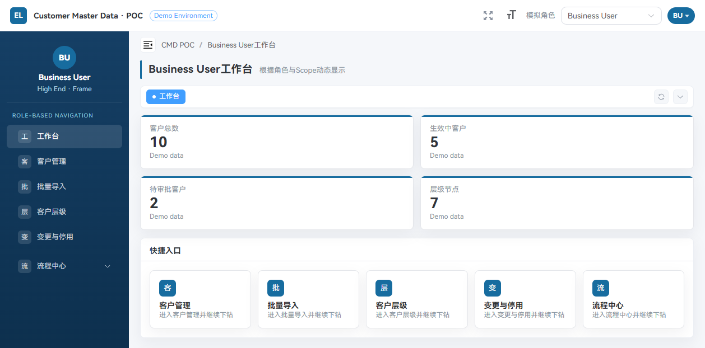
图 1：登录后默认是 Business User 工作台
步骤 2切换角色：点击页面顶部的"模拟角色"下拉框（默认显示 Business User），选你想扮演的角色。本手册会在需要"审批"时切到 BU Data Steward。
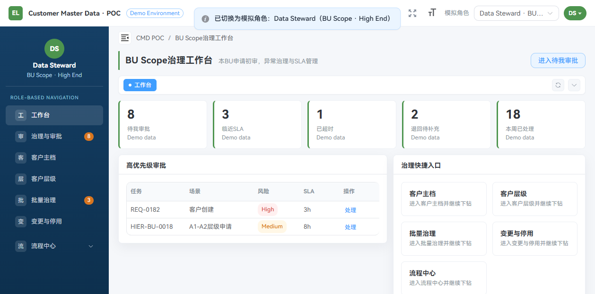
图 2：把角色从 Business User 切换成 BU Data Steward
2. 新建客户申请（OCR 识别营业执照）
步骤 3左侧菜单点 客户管理，进入客户列表页。你会看到列表里有 One ID 列，以及顶部一个可按 One ID / 申请编号 / 客户名搜索的框。
图 3：客户管理页（已含 One ID 列 + 搜索框）
步骤 4点右上角 「新建客户」按钮，弹出申请表单。
图 4：新建客户申请表单（动态字段已按数据模型加载）
步骤 5用 OCR 省去手抄：点表单上方的 「查看 OCR 识别结果」，弹出营业执照识别窗口。
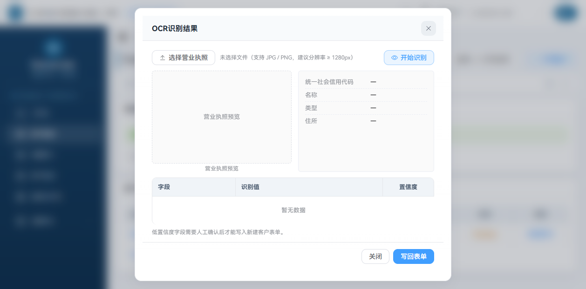
图 5：OCR 识别弹窗
步骤 6在 OCR 窗口选一张营业执照图片（演示里点"选择营业执照"会自动载入一张测试图），系统自动识别出：客户法定名称、统一社会信用代码、注册地址、省、市。
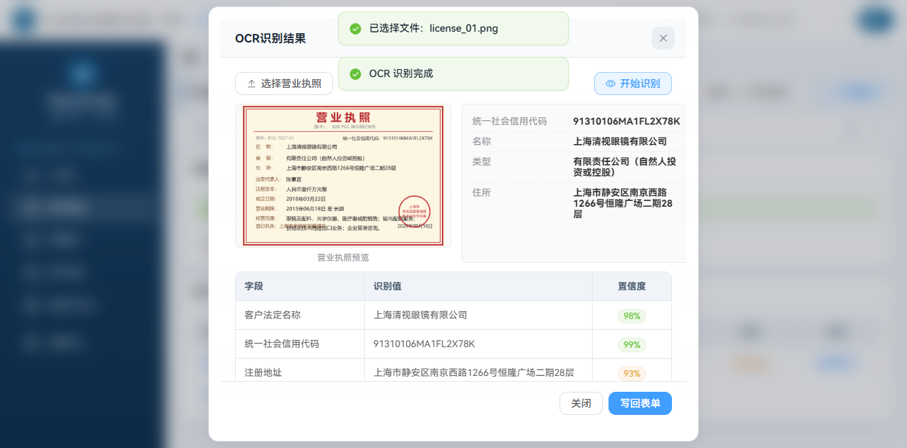
图 6：自动识别出的营业执照字段
步骤 7点 「写回表单」，识别结果回填到申请表单，被回填的字段旁边会打 OCR回填 标签，肉眼可见。
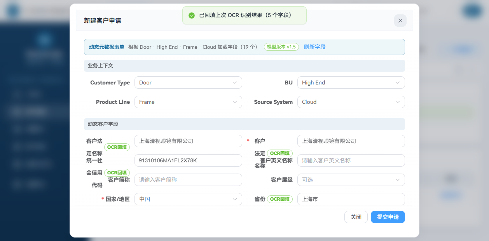
图 7：OCR 结果写回表单（带"OCR回填"标签）
注意：OCR 只认营业执照上有的字段。像联系人、联系电话、客户简称这类营业执照上没有的，得自己填。
步骤 8补全必填项（如联系人、联系电话、客户简称），确认无误。
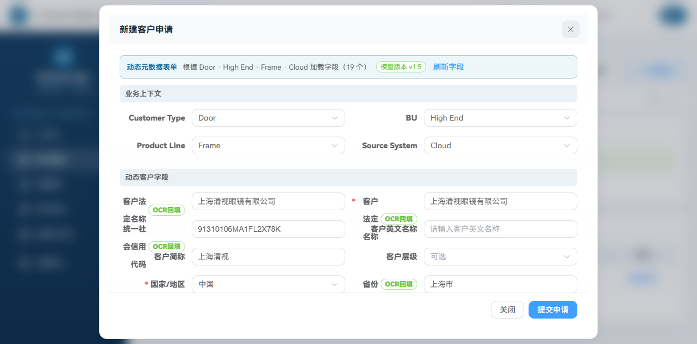
图 8：补全联系人等字段后的完整表单
3. 提交申请 · 拿到贯穿 ID
步骤 9点 「提交申请」。系统会依次自动做三件机器活：①落客户主档（同时生成 One ID）②数据质量(DQ)打分 ③智能查重。完成后弹出成功提示，里面就带着你的两个身份证。
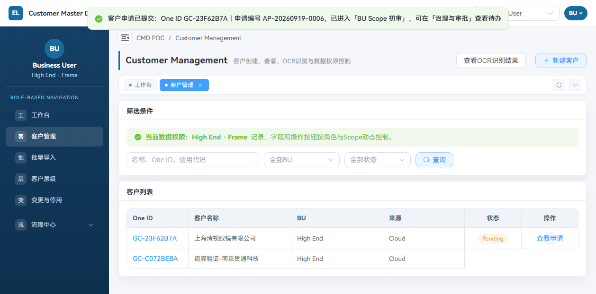
图 9：提交成功！拿到 One ID = GC-23F62B7A，申请编号 = AP-20260919-0006
这一步的意义：客户从"无"变成"有一条待审批的申请"。接下来所有页面都能用这两个号找到它。
4. 用 One ID 在任意页面追踪
步骤 10回到客户管理列表，在搜索框输入 GC-23F62B7A 或 AP-20260919-0006，点查询——立刻命中这条客户（此时状态是 Pending，表示审批中）。
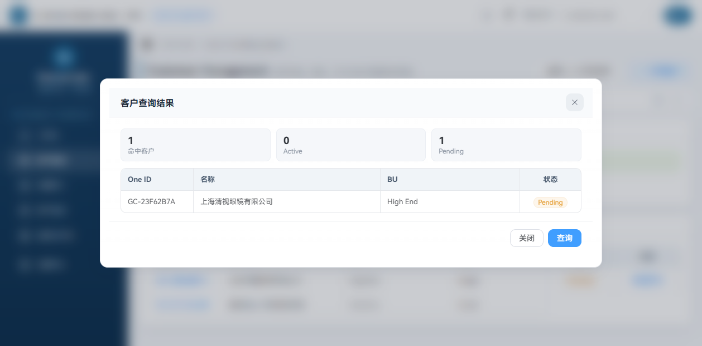
图 10：用 One ID 搜索，精准命中刚提交的客户
关键能力：这个搜索框在客户管理、治理与审批、工作项、已激活/已完成工作流、审计中心等所有列表都一样——也就是说你拿同一个号，能在全系统追着这条客户跑。
5. 切到 BU 角色 · 工作项
步骤 11顶部把角色切成 BU Data Steward。左侧菜单展开 流程中心 → 点 「工作项」。这里列出"当前轮到我处理的待办"。你刚提交的申请就在第一条。
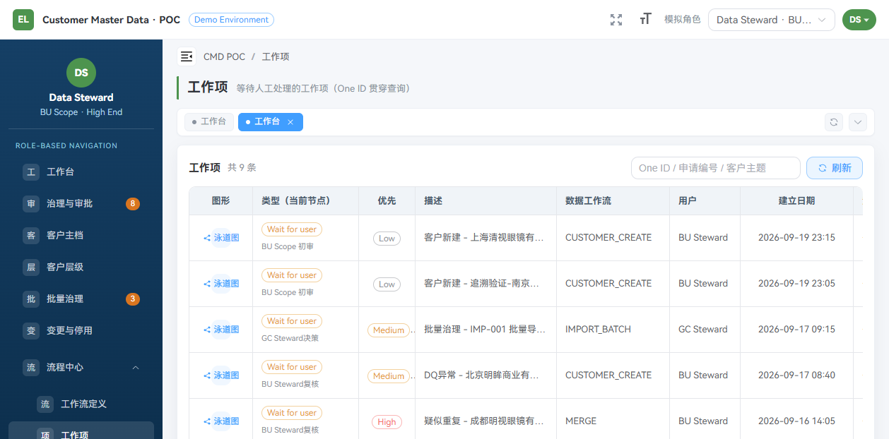
图 11：BU Data Steward 的"工作项"——待我初审的申请排在首位
菜单说明：「流程中心」下有三个视图，都是 RuoYi 二级子菜单样式：
- 工作项：当前需要我处理、还没办的（PENDING）。
- 已激活工作流：正在跑、还没结束的流程（含别人在处理或等待的）。
- 已完成的工作流：已经批完/拒绝/退回、走到终态的。
6. 流程跟踪（泳道图 + 步骤日志）
步骤 12在工作项第一条点 「泳道图」按钮，打开"流程跟踪"窗口。它把整条工作流画成泳道图：横向是阶段（提交 → 校验 → 初审 → 决策 → 完成），纵向是处理人角色。
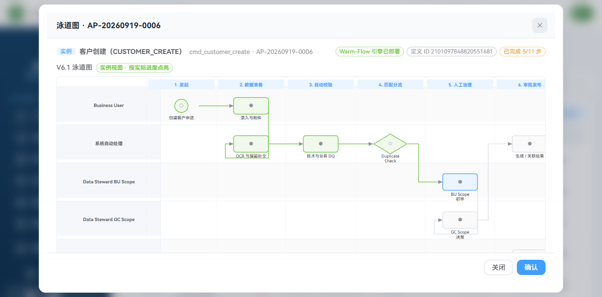
图 12：实例视图泳道图——绿色是已完成的自动步骤（5/11），蓝色"BU 初审"是当前卡住的节点
步骤 13把窗口往下滚，看底部的 「工作流步骤执行日志」。这一步是新增的：系统把工作流每一步都记下来了，且每一步都带 One ID，所以可以精确复盘"谁、在哪个节点、做了什么"。
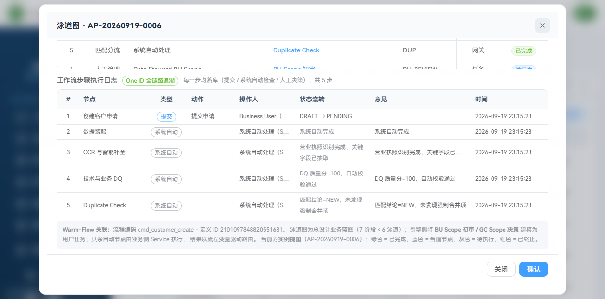
图 13：步骤执行日志——提交、录入、OCR、DQ 打分、查重 5 个自动步骤全程留痕，且都挂 One ID
为什么这步重要：之前工作流"调起来"后，机器做的几步（OCR/DQ/查重）是黑盒。现在每一步都写进 cmd_workflow_step_log 表，可查、可审计。
7. BU 审批：四个动作（核心业务）
步骤 14回到 BU 角色，进 治理与审批 菜单（也可在"工作项"里直接处理）。用申请编号搜到这条，点中这一行，右侧会展开详情和四个动作按钮。
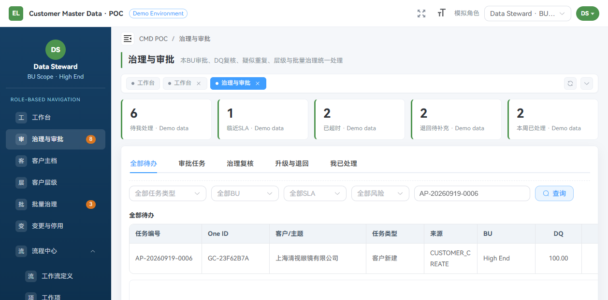
图 14：治理与审批队列——按申请编号搜到待办
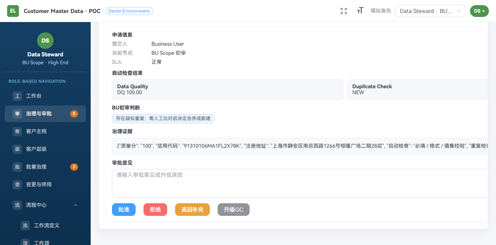
图 15：点中行后右侧出现详情 + 四个动作
四个动作分别是什么（业务含义）：
| 按钮 | 含义 | 结果 |
|---|
| 批准 | BU 认可，客户资料没问题 | 客户转 Active（正式主数据），流程结束 |
| 拒绝 | 资料有问题，不予创建 | 客户转 Rejected，流程终止 |
| 退回补充 | 缺材料，打回给业务补 | 客户转 Returned，业务可再提交 |
| 升级 GC | 超出 BU 权限（如跨区域/高风险） | 转给 GC Steward 做全局决策，BU 范围扩大为全局 |
步骤 15先演示最常用的 「批准」：在意见框填一句（如"OCR与DQ校验通过，同意创建"），点「批准」。
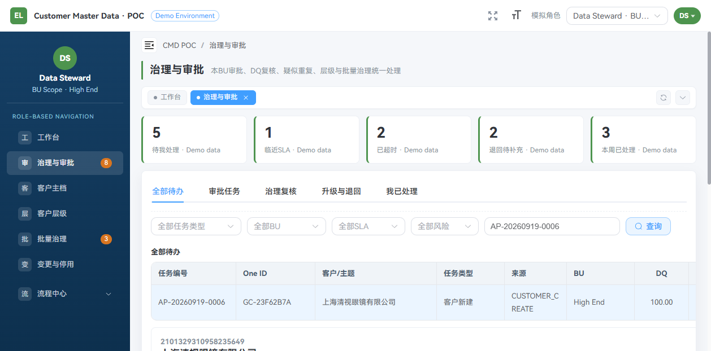
图 16：点「批准」成功——待办数 -1，已处理数 +1
步骤 16切到 「我已处理」 标签页，能看到刚批完的这条（状态 APPROVED）。
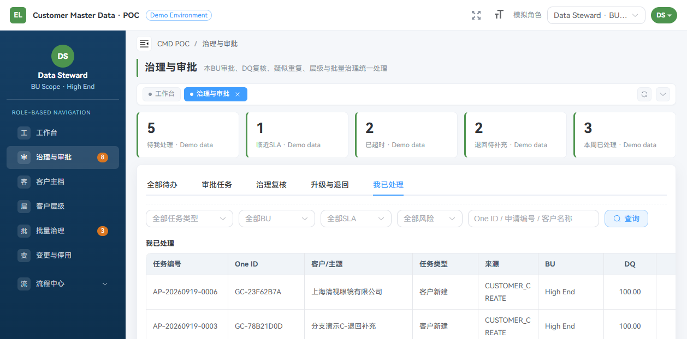
图 17：BU 的"我已处理"列表，含刚批准的 AP-20260919-0006
其余三个分支怎么测：另建几条客户，分别点"拒绝 / 退回补充 / 升级 GC"即可。本演示库里已经预置了三条分支样本供你对照查看：
AP-20260919-0002 分支B-审批拒绝（Rejected）AP-20260919-0003 分支C-退回补充（Returned）AP-20260919-0001 分支A-批准通过（Approved）
想在泳道图里看"拒绝"分支长啥样，可在"已完成的工作流"里打开 AP-20260919-0002。
8. 审批通过后的去向
步骤 17批准后，这条客户
正式成为主数据。验证三处：
- 客户主档：用 One ID 搜，状态列变成 Active。
- 已完成的工作流：出现在"流程中心 → 已完成的工作流"里。
- 业务视角：切回 Business User，客户管理列表里它从 Pending 变成 Active，业务方可以正式使用。
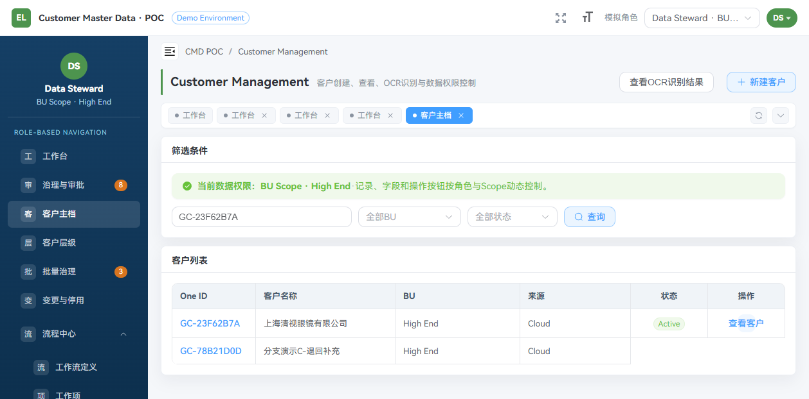
图 18：客户主档按 One ID 搜索 → 状态 Active
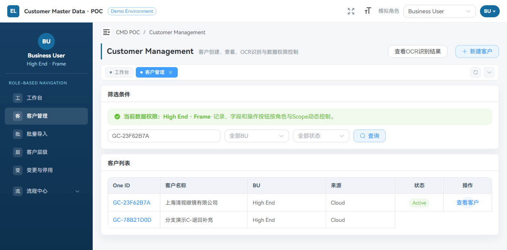
图 19：切回 Business User，客户列表里该客户已是 Active（正式主数据）
一句话：走完"提交 → BU 批准"，这条客户就从"申请"变成了公司里真实可用、被各系统引用的主数据。这就是工作流"吊起来"的最终目的。
9. 三张工作流视图（流程中心）
左侧 流程中心 下有三个菜单，分别看流程的不同状态。它们都带 One ID 列，且都能按 One ID 搜。
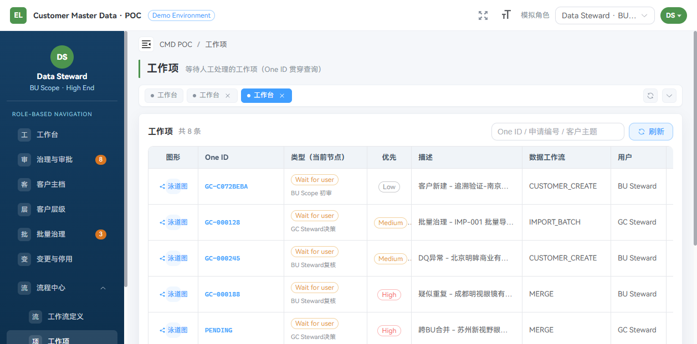
图 20：工作项（待我处理）
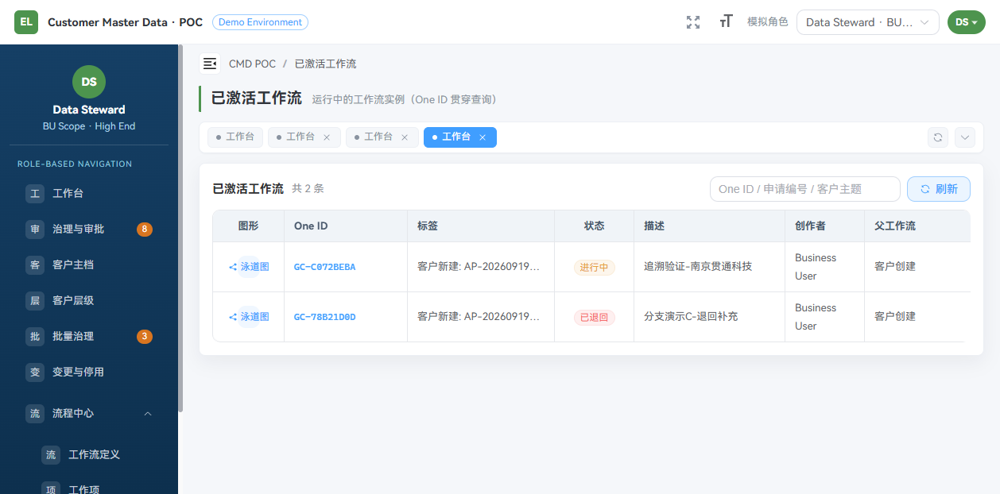
图 21：已激活工作流（正在跑、未结束）
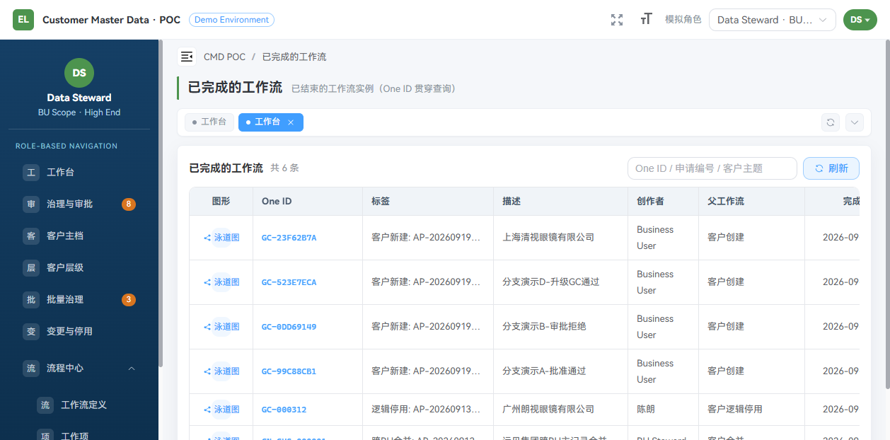
图 22：已完成的工作流（已到终态），One ID 列已前置最显眼
步骤 18在"已完成的工作流"里打开这条，点「泳道图」——此时是实例视图，全部 11 个节点都点亮（绿色），代表流程完整跑完。
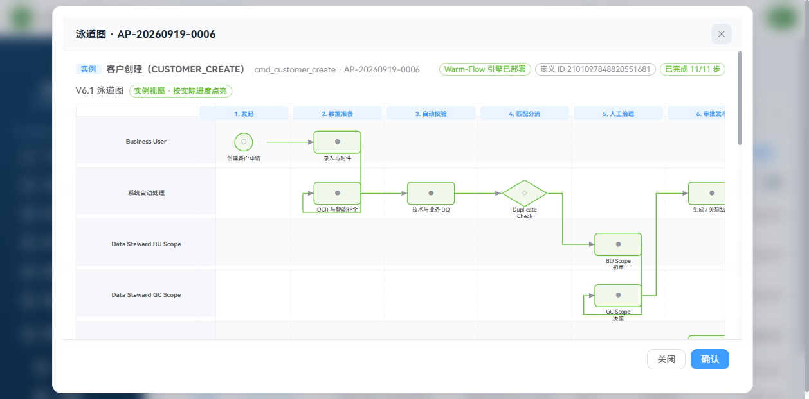
图 23：已完成的实例视图——11/11 节点全绿
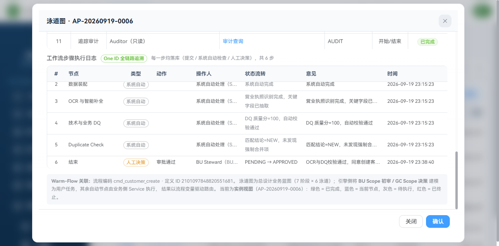
图 24：步骤日志里第 6 步"人工批准(BU)"也留了痕，带操作人和意见
10. 审计追溯（Auditor 角色）
步骤 19把角色切成 Auditor，进 审计中心。这里记录"谁、在什么时候、对哪个客户、做了什么、结果和风险等级"。每一行都带 One ID 和关联单号。
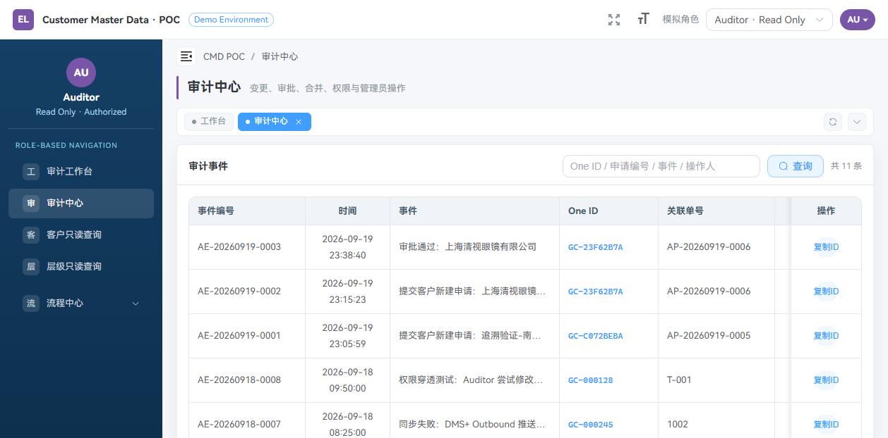
图 25：切换到 Auditor 角色 + 审计中心
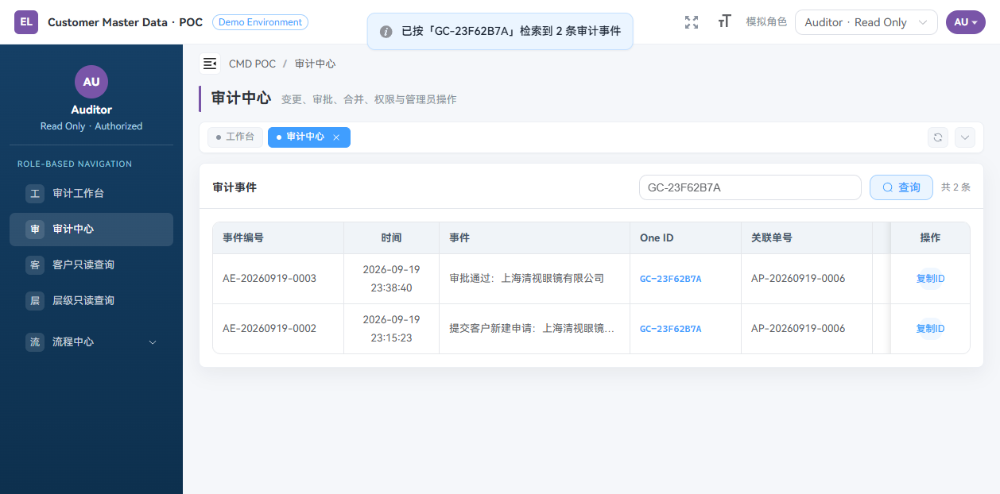
图 26：审计中心按 One ID 过滤——提交与批准两条事件都挂在同一 One ID 下
合规价值：审批动作会自动落一条审计事件（如 AE-20260919-0001），含操作前/后状态快照。监管要查"这条客户谁批的、为什么批"，用 One ID 一秒拉全。
11. 给不懂业务的人：一句话总结
- 业务方（Business User）：填表 → OCR 写回 → 提交。拿到
One ID 和 申请编号。
- 机器自动做：落档、DQ 打分、查重（这 5 步在泳道图底部步骤日志里看得见）。
- BU 管家在"工作项"里收到待办 → 打开泳道图看进度 → 在"治理与审批"里点 批准/拒绝/退回/升级GC。
- 批准后：客户变 Active 主数据；流程出现在"已完成的工作流"；审计中心多一条记录。
- 全程：拿同一个
One ID，从客户管理、审批、工作流视图到审计，任何页面都能追到这条客户。
一个还没做成独立菜单的点："流程跟踪（泳道图）"目前是藏在每条工作项 / 审批记录的 「泳道图」按钮 里，没有单独放成侧边栏菜单项。如果你希望它也像"工作项/已激活/已完成"那样作为流程中心下的独立菜单，我可以再帮你加（需要改菜单配置 + 一个独立泳道图面板）。你说一声即可。